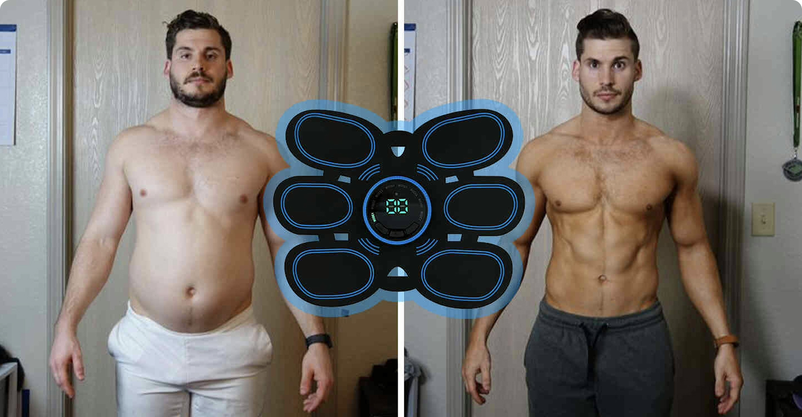
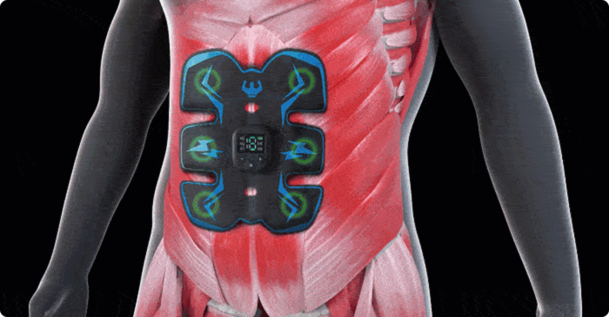
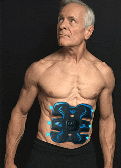
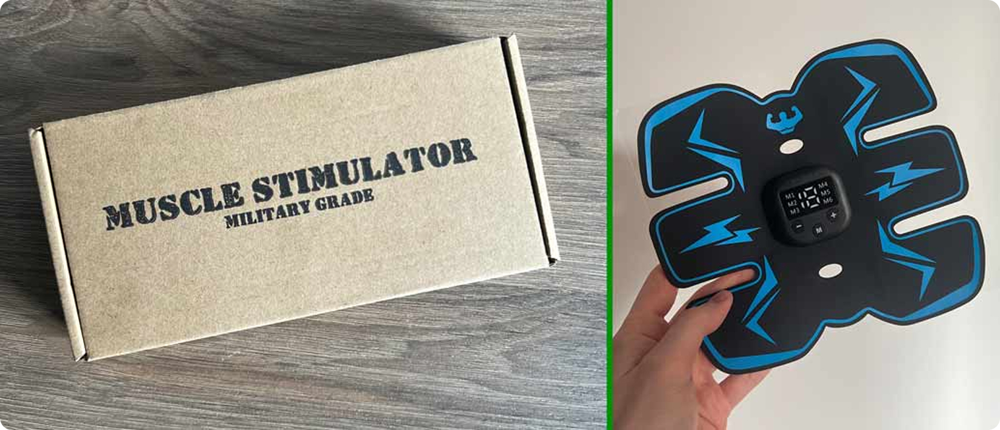
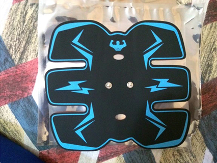
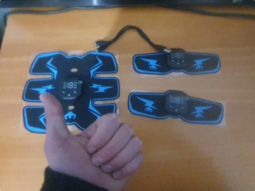

@@include('./partials/head.html')
Home page
@@include('./partials/header.html')

Turning 49, I realized how crucial it is to stay fit and healthy, especially as we get older. But
finding the time and
motivation was always a struggle.
Truth is I’ve never been a fitness junkie, but I always tried to stay active and healthy. The pandemic
threw a wrench in
my routine, and I just couldn't get back on track even after it ended.
Now that I'm almost 50, balancing my time between my newborn grandson and full-time work has made it
increasingly
challenging to maintain focus on my fitness goals, and I inevitably kept packing
on the pounds.
I can't forget that day when I was helping my wife with the groceries, struggling to catch my breath
after climbing just
a few stairs. I felt completely drained and embarrassed, wondering how I'd let myself become so out of
shape. It hit me
that if I didn’t take control of my health and make a big change, I might not be there for my
grandchildren in the long
run.
An Ex-Military Neighbour Changed Everything
Just a couple of days later on a Sunday afternoon, we had this family barbecue, and we invited our
next-door neighbor,
an ex-military man in his late 60s. He was always in great shape, and
that day was no exception. I have to admit, I
couldn’t help but feel a bit jealous as I watched him enjoy a Budweiser, showing off his lean, muscular body for his
age, bursting with energy, and charming the ladies. He even joined in on the fun and games with
the kids, keeping up
with them like it was nothing.
How could he manage to stay in such great shape despite his busy work and
family life?
I had to know his secret.
Later that day, we started chatting, and I flat out asked how he maintained his impressive fitness
level. What he told
me has completely changed my life.
New Groundbreaking Technology for Losing Weight and Building Muscle
He shared his "secret"—a new kind of muscle stimulator called
CombatAbs. That was all he did! No gym, no sports, just an
occasional bike ride when he had time, which wasn't often.
I was skeptical at first. A muscle stimulator? Like those things I've
seen in infomercials a million times?
But then he dropped a bombshell. This wasn't just any muscle stimulator;
it was a military-grade device that used EMS
technology to help him burn fat and build muscle.
He explained that he found out about the device from his military
buddies. The CombatAbs was developed by military
engineers specifically to meet the fitness needs of soldiers in the field.
The best part? He told me he only used it for 20 minutes every day as a
part of his morning routine. It seemed too good
to be true, but seeing the results right in front of me, I couldn't help but be intrigued.
How Does It Work - The Science Behind the CombatAbs Muscle Stimulator

After the barbecue, I spent all night researching and learned a lot.
CombatAbs Muscle Stimulator uses advanced EMS
technology that works by sending electric pulses to exercise your abs and arms muscles. When your
muscles receive the
signal, they contract and flex as they would do naturally during a regular
exercise. It essentially emulates a
high-intensity workout by targeting and stimulating your deepest core and arms muscles, but without the hassle of going
to a gym and working out.
The more I read about it, the more I was amazed at what this device can do for you. Using it as little
as 20 minutes per
day, you can:
1. Build muscle strength
For people over 50, maintaining muscle strength is vital to prevent age-related muscle loss and
avoid
diseases like
osteoporosis, arthritis, and even type 2 diabetes. Also, you can’t deny how important staying strong
is
for your mental
and emotional health.
2. Improve weight loss
The CombatAbs helps boost weight loss by stimulating your muscles to burn calories and fat more
efficiently, making it
easier to shed those extra pounds.
3. Reveal abs & tone muscles
By targeting specific muscle groups, the CombatAbs helps you achieve a more toned and defined look,
making it easier to
reveal those hidden abs and sculpted muscles, so you look better and feel better.
4. Enhance range of motion
Using EMS technology can help improve flexibility and range of motion by working on muscle
elasticity and joint
mobility, making everyday tasks and movements easier and more comfortable.
5. Relieve cramps
Regular use of EMS technology has been proven to reduce the number of cramps, as it helps relax and
stretch tight
muscles, providing much-needed relief.
6. Improve blood flow
The muscle contractions stimulated by the CombatAbs promote better blood circulation, reduce muscle
soreness and promote
heart health. By using the CombatAbs you're not only supporting your muscles but also taking a
proactive step towards
maintaining a healthy heart.

It’s also 100% safe for people of any age to use, with no side effects. In fact, EMS technology has
been around for
years, and was even used by Bruce Lee in the 70s to improve his
strength and workouts. The company behind the CombatAbs
stimulator took it to the next level by improving the technology and turning it into a portable,
all-in-one muscle
workout machine that burns fat and builds muscle in record time.
It’s like hacking your body into a full-blown muscle producing machine, but
without
the expensive gym memberships!
You know what’s awesome about CombatAbs? It’s super easy to
use. All you need to do is to stick it on your belly and
arms, press one button, and you’re good to go. Plus, there are 10 intensity levels and 6 different modes
to choose from,
so you can totally customize your workout to fit your needs. No fuss, no complications—just a simple,
effective way to
get fit!
Seeing all the hype around this product and its benefits, I knew I had to try
it myself.
I decided to take the plunge and ordered the CombatAbs Muscle Stimulator fromthe official website… Long story short:
that turned out to be one of the best decisions I've ever made for my body.
My 4-Week CombatAbs Abs Experience
Week 1
To my delight, the CombatAbs Muscle Stimulator arrived at my doorstep just three days after
ordering it. The moment I
put it onto my belly, I was immediately struck by the impressive range of modes available, yet it was super simple to
navigate.
After around a minute of playing around with different settings I found a setting I was comfortable
with and left it on
for 25 minutes to do its job and watched some TV in the meantime. Being a bit on the heavier side, I
was worried that
using the device would be uncomfortable or painful. But to my surprise, the
CombatAbs Muscle Stimulator was super comfy,
and I almost completely forgot it was even on.
One week after using it for 20 minutes every day I was surprised at the
results. My abs muscles were tighter and I could
see some fat gone from around my mid-section. I also noticed my energy levels increased by a lot.
Best of all, I didn't even change anything about my daily routine. I used the Abs Stimulator while
watching TV, or
walking in the park. On Day 7, I got on the scale and couldn't believe my
eyes. But I still wasn't convinced. I wanted
to wait and see the results in the upcoming weeks.
Week 3
After 3 weeks, all my doubts and skepticism had absolutely vanished! I am down 2 pant sizes after
losing around the
excess fat on my body. My love-handles have all but disappeared and can
finally see my abs now.
Week 4
After the fourth week, I was very happy with my final results. I feel blessed to share this with
other people who are
struggling with their weight. I lost an additional few pounds in my final
week which really surprised me.
What Do Other People Say About CombatAbs?
While researching CombatAbs, I discovered it’s almost like a secret club, filled with happy customers:
I'm blown away by the results. This product is a game-changer for anyone looking to tone their abs
and get that coveted
six-pack. It’s incredibly simple to use and the technology is top-notch. I can wear it while I’m
doing other activities,
like walking or working at my desk, and still get a great abs workout. And the results? Wow. After
just a few weeks of
using the abs simulator, I can already see a noticeable difference in the tone and definition of my
abs. It's truly
amazing how effective this product is.
Samuel Ryan - Atlanta, GA
I've used it 3 times a day since I got it (yeah, I know it says once a day but I'm pumped!!) I can
honestly feel it
working. I physically feel my side-abs hardening and my lower tummy (where my belly got saggy thanks
to parenthood) is
transforming from the inside out. This one kick a** and I love it
Richard Miller - Portland, OR
I really like this product! It is very easy to use and gives your muscles a great workout. I
started out at the lowest
settings and then just increased the intensity until I found what worked best for me. The charge on
the device also
lasts a really long time.
John Winters - San Antonio, TX
Conclusion: is it worth it?

Absolutely yes, and it’s easy to see why.
NOTHING is more important than your health, especially as you age. And fitness
is key to well-being and feeling your
best. With innovative tools like CombatAbs, achieving and maintaining your fitness goals has
never been easier, even
with a busy lifestyle.
That’s an absolute steal when you consider it’s less than the cost of a two-month gym membership. It’s
an amazing deal
and I’m sure it won’t last long… So make sure you act fast to get the deal (it
makes a great gift too!)
Plus, they’re so confident in their product, they even offer a 30-day money
back guarantee if you don’t like this
product for any reason (but I can’t imagine why anyone wouldn’t love it!). You just can’t beat this
deal.
The earlier you start using the CombatAbs Muscle Stimulator, the sooner you will get your dream
physique, and enjoy its
amazing health benefits.
IMPORTANT INFORMATION
Over the next 2 days, CombatAbs is offering a 60% discount for all new customers. However, the stock is already running
very low. If you want to try CombatAbs now at the introductory price of $39
(incl. 60% discount) and with the 30-day
money-back guarantee, being quick is worth it!
I have been using this twice a day for almost 2 weeks and already see a noticeable difference. My
stomach is a lot
tighter, more defined and flatter. You can feel your abs pulsating when you use it so I know it’s
activating them. I use
it on mode one level 5-7 on the lower part of my stomach then again on the upper part. Also I have
had no issues with
charging it and it holds a charge for about 1 week. Don’t hesitate just buy it!

Debby F. - Salt Lake City
I am so happy with this purchase. Mode 6 is exactly the same as cool tone at a medi spa. You should
work your way up
through the levels so you don’t cramp, I do a few seconds on the lower setting then settle into a 9,
but it goes all the
way to 19!
Don’t forget your rest days. Use this three days in a row and you’ll get sore!

Joseph P. - Minneapolis
The craftsmanship is of high quality. It is well constructed for what may be years of use. The
directions are easy to
read and follow. It charges quickly and lasts for multiple uses. It definitely gives the abs a
thorough work out, and
you’ll get results if you use it as directed. I highly recommend it.
 Apply 60% Discount & Check Availability
Apply 60% Discount & Check Availability